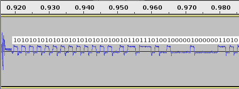

I'm trying to use a RTL-SDR device for receiving emonTx transmissions, since I already have it running to receive data from the oil tank monitor. I'm having a few minor difficulties interpreting the packets reliably...
Here's the FM-decoded waveform I see:
I'm working from the available documentation on the Jeelibs packet format and header contents, the emonTx v3 firmware and Jeelibs RF12 library on github, and the actual data I got from the unit over its UART, when this packet was transmitted:
CT1 CT2 CT3 CT4 VRMS/BATT PULSE 1156 1 1077 61 24014 1085 (0x484 0x1 0x435 0x5dce 0c43d)
The packet should start with the preamble 0xAA 0xAA 0xAA (10101010 10101010 10101010).
Then comes the SYN 0x2d 0xd2 (00101101 11010010),
followed by the HDR 0x08 0x1a (00001000 00011010), and then the data followed by a CRC.
However, there seems to be a zero bit missing — either the last bit of the preamble or the first bit of the SYN. If you look at the pretty picture above, it goes:
10101010 10101010 101010100101101 11010010 00001000 00011010…

After that there's a bunch of data which look fairly sane, assuming we send 3000 (0xbb8) for all non-existent temperature sensors:
(CT1) (CT2) (CT3) (CT4) (VRMS) (T1) (T2) (T3) (T4) (T5) (T6) (PULSE) 48 04 01 00 35 04 3d 00 ce 5d b8 0b b8 0b b8 0b b8 0b b8 0b b8 0b 3d 04 00 00
This is followed by a CRC16, and a postamble 0xAA byte:
(CRC) (postamble) 12 a6 aa
As far as I can tell, the CRC is supposed to be a simple CRC16 of the bytes from the 0xD2 of the SYN (or perhaps the 0x08 of the HDR), to the final zero of the pulse reading. I can't find any way to calculate it to be 0xa612 though. I've been using the C version of _crc16_update() from here, and the version from the Linux kernel (which are the same polynomial).
I even tried modifying the length byte to 0x18 because my reading of the code suggests that's what it should be; only the RF12_COMPAT version should add the HDR field to the payload length. But I still can't make the CRC work.
So... for me to get this working properly and rtl_433 decoding the emonTx packets, I would very much appreciate some help in resolving the following questions:
- What happened to the "missing" bit between the preamble and the SYN?
- Is that 0x1a for the length expected, rather than 0x18?
- How do I validate the CRC?
Thanks!
Re: Receiving emonTX transmissions with rtl_433
You could look at the 3-phase sketch, which doesn't use JeeLib per se, though it does drive the RFM in exactly the same way.
My notes say the CRC is calculated over the Group, Header (includes the NodeID), Length and the payload. I see you have the Group (210, = 0x2d) as part of Syn. That's wrong, Group is user-selectable. The Length byte is the length of the payload. I didn't have any trouble with _crc16_update( ) and the CRC.
Re: Receiving emonTX transmissions with rtl_433
The 0x1a (26d) is the length field (payload from immediately after this byte to the end of the packet, excluding the 2 byte CRC). You are both right about the Group - SYN is set to two bytes, the first is fixed and the second is variable as the "Group", defaulted to 210d This is a neat trick to get the RF module to filter out packets in the same channel, but addressed to a different "Group"
SYN doesn't make it into the Rx buffer, so do your CRC processing from HDR onwards with the same initial value jammed in as per the library code.
Today's trivia: Why is 210 the default? On the predecessor chip (RFM12), the second SYN byte was fixed at this value.
Re: Receiving emonTX transmissions with rtl_433
According to this blog post, the Group is indeed part of the SYN, although it's also user-selectable:
The length of the payload is indeed 0x1A; not sure where I got 0x18 from.
Re: Receiving emonTX transmissions with rtl_433
Aha, the CRC issue is solved; you can even see it above. What did I say the value for CT1 was? And what bytes did I show when I showed the decoded data? That's supposed to be 0x84 0x04 (0x484 == 1156d) and now my CRC16 actually does check out OK.
So my CRC and length questions can be ignored and attributed to my own stupidity. Sorry for the noise.
That leaves the "missing" zero bit between the preamble and the SYN — there really are only two periods of the low frequency there, not three as we'd have hoped:
This is …10 1010010 1101 1101 0… where we want to see
…10 1010 0010 1101 1101 0… (.A2DD2.)
I take it there weren't units shipped last week which use 0x55 as the preamble bytes...?
Re: Receiving emonTX transmissions with rtl_433
I have to admit I did look at that and wonder... I can't believe JeeLib has changed. You could try pulling the RF part out of the 3-phase sketch and writing a dummy sketch around it to send a fixed message. If that's got a missing zero, or its preamble byte is not 0xAA, I'm totally confused.
Re: Receiving emonTX transmissions with rtl_433
The emonTX has which radio module installed?
Re: Receiving emonTX transmissions with rtl_433
Seems to be RFM69. I haven't done anything to it except move the jumper for AC power, since I bought it last week.
I'm inclined not to worry too much about the missing bit. I can look for the 0x2D which marks the start of the packet, and the CRC protects me from false interpretations fairly well.
Re: Receiving emonTX transmissions with rtl_433
The RFM69 chip has no documented way to transmit 0x55 as preamble - 0xAA is hardwired.
Turns out the 'missing bit' is harmless since once enough preamble bits are received to synch up the data strobing, the data stream is essentially scanned bitwise looking for the start of the SYN byte(s) 0x2D.... Picking up the LSB of the last preamble byte works fine as the MSB for the pattern match since they are both zero.
I think the 'bug bounty' has long since expired for this chip, so no reward for eagle eyes ;-)
Re: Receiving emonTX transmissions with rtl_433
MJ, That's well worth knowing, thanks. I hope I'll remember it all next time!
Re: Receiving emonTX transmissions with rtl_433
Thanks for the helpful responses!
I've now got rtl_433 receiving and decoding the emonTx transmissions, in my tree at https://github.com/dwmw2/rtl_433 which should get merged fairly soon.
You need to explicitly increase the sample rate from its default (250,000) to 2,500,000, since the emonTx packets are too fast to be detected otherwise (only 5 samples per bit is not enough for FM decoding).
[dwoodhou@shinybook rtl_433]$ src/rtl_433 -s 2500000 -q -F json Found Rafael Micro R820T tuner Exact sample rate is: 2500000.107620 Hz Sample rate set to 2500000. Bit detection level set to 8000. Tuner gain set to Auto. Tuned to 433920000 Hz. {"time" : "2016-01-20 12:22:53", "model" : "emonTx", "node" : 8, "ct1" : 1249, "ct2" : 1, "ct3" : 1171, "ct4" : 57, "Vrms/batt" : 236.420000, "pulse" : 46430} {"time" : "2016-01-20 12:23:03", "model" : "emonTx", "node" : 8, "ct1" : 1245, "ct2" : 0, "ct3" : 1167, "ct4" : 56, "Vrms/batt" : 236.650000, "pulse" : 46433} {"time" : "2016-01-20 12:23:13", "model" : "emonTx", "node" : 8, "ct1" : 1249, "ct2" : 0, "ct3" : 1158, "ct4" : 60, "Vrms/batt" : 237.370000, "pulse" : 46437}I haven't decoded the temperature values yet; I need to plug a sensor in to my unit and confirm how it works; what multiplier is used to turn the temperature in °C into an integer, and confirm that a value of 0xbb8 really is a reliable way to indicate that there's no value. I would have expected 85°C to be used for that, since isn't that what the 1wire sensors themselves use for "no reading"?
Since this is basically a decoder for the generic packet format rather than specific to emonTx, I should also make sure I'm not accepting packets I shouldn't. Obviously it's non-trivial since people can screw with the sketch on their boards all they want, but I'd like to do a reasonable job of decoding the standard packets as the board is shipped. So for now I require that the group be 0xD2, the packet be precisely 0x1a bytes, and the CRC validates. For rtl_433 that'll probably suffice — it has other sensor decoders with a much higher false positive rate already.
Re: Receiving emonTX transmissions with rtl_433
While this is now basically working, further testing has brought up another question: What is the tolerance on the bit rate? In this blog post, it's described as "about 50kbits/sec" but what is the range we're likely to see in practice?
This matters because we don't have Manchester encoding or any start/stop bits per byte. So if you do a run with no current sensors hooked up, you can get a long run of zeroes, as shown for example in this capture in the rtl_433_tests test packet corpus.
In this case, assuming a frequency of 50kb/s doesn't result in a correct decode. The bit period is more like 20.3µs, not 20µs. So that low-frequency run of 1157.6µs needs to be interpreted as 57 zero bits, not 58 zero bits.
At the moment, rtl_433 doesn't do any automatic rate adaptation based on the edges it sees — it relies on the sensor decoder giving a correct value for the bit period. For anything with Manchester encoding or start/stop bits, that works out fine. But not this.
So I'm trying to work out what variation we'll see between units, to decide whether we really do need to add the dynamic rate adaption immediately, or whether we can just configure the emontx decoder for bit period of 20.3µs and that'll work well enough for the short term?
Re: Receiving emonTX transmissions with rtl_433
The transmit bit strobe is derived from the RF module on-board xtal. Significant sources of error are from the (systematic) inexact match to the target ~49.261Kb from the limited length divisor + the usual xtal uncertainty from initial calibration offset, temperature, ageing etc. (initially count on +/- 10 ppm growing to 15-20 ppm if temperature range is not extreme)
There are a couple of threads here discussing the same issue of avoiding long strings of null bytes in the payload since the RFM69 clock recovery locks in fast with a short preamble, but is prone to drift off without bit transitions to drag it back into synch. Manchester is inappropriate since it would double the packet transmission time - data whitening is available, but not turned on for backwards compatibility with the installed base of RFM12B modules.
From the RFM69 driver init code:
0x03, 0x02, // BitRateMsb, data rate = 49,230/49,261 kb
0x04, 0x8A, // BitRateLsb, divider = 32 MHz / 650
49,230kb listening to RFM69, 49,261kb listening to a legacy RFM12B
Re: Receiving emonTX transmissions with rtl_433
Great, thanks. It's that systematic vs. non-systematic error that I was looking for.
So instead of 50kHz ± δ where δ is large, I have 49261Hz ± δ where δ is fairly much negligible.
That means I can set the bit period to 20.3µs and sleep soundly at night, although being adaptive would be nicer in the long run. Thanks!
Re: Receiving emonTX transmissions with rtl_433
The temperature sensor circuits positive fault indication value of 300 was intended to be as obviously out of scope as necessary to indicate an unused or disconnected sensor. Since the upper limit of the sensor is 125C or 257F, 300 seemed logical.
As far as I'm aware, there have been no reported cases of an RFM12/69 type receiver suffering from the bitslip issue due to 4 zero power readings, the reported cases seem to be caused instead by the 6 zero temperature values that have now been replaced by the 300s, that may be because there are less likely to be devices out there with no CTs attached or possibly because the average "slip" is not enough to cause an issue unless a run of over 64 bits without change is encountered.
It may be a better idea to split up the power values since there is no ideal "positive indicator value" as the whole range can be used. Currently the powers and temperatures could be alternated, although it would help aleviate the issue, it's not the prettiest solution, or if Wh totals for energy are introduced (I think it's in the cards) and are placed after each power reading, a "starting" value of 1Wh could breakup the potential zero bit run without impacting readings too much.
Paul
Re: Receiving emonTX transmissions with rtl_433
From that response I infer that the temperature values are / 10°C — I could have worked that one out empirically but then I'd have to reset the unit and resynchronise it with the meter's LCD output when I reconnect the pulse counter ☺
I'll add the temperature support to rtl_433 accordingly; thanks.
As for splitting the power values up... maybe if you're going to change the packet format then it would make more sense just to apply the whitening? As well as adding a way to detect the difference, of course. Which is nice for an open-source system although it would make reverse-engineering transmissions from a closed system quite horrible!
Re: Receiving emonTX transmissions with rtl_433
Sorry, yes. the scaling is x10 to make it an integer in the OEM "emon" sketches the resolution for reading the sensor is set in the sketch and I believe most if not all use a x10 scale (example), although I do have an emonTx here that is x100 (2 decimal places) but that is running a "MartinR PLL" sketch not an OEM one.
Paul
Re: Receiving emonTX transmissions with rtl_433
This support is now merged into rtl_433 upstream. Thanks for all your help.